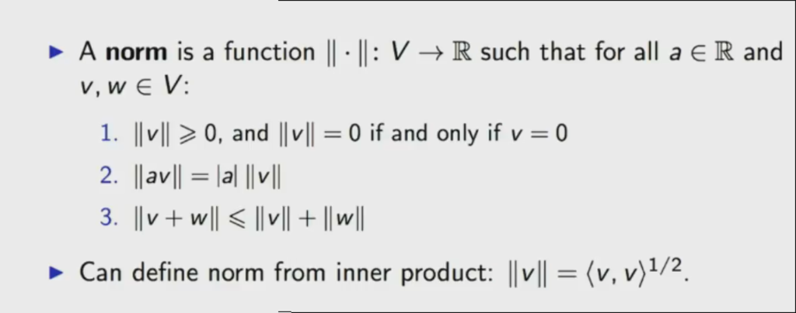
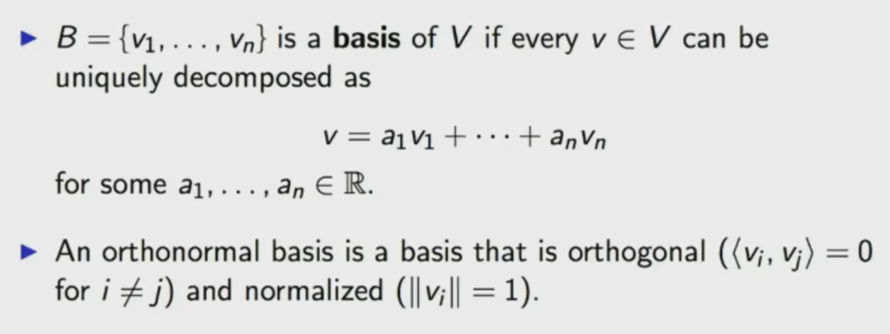
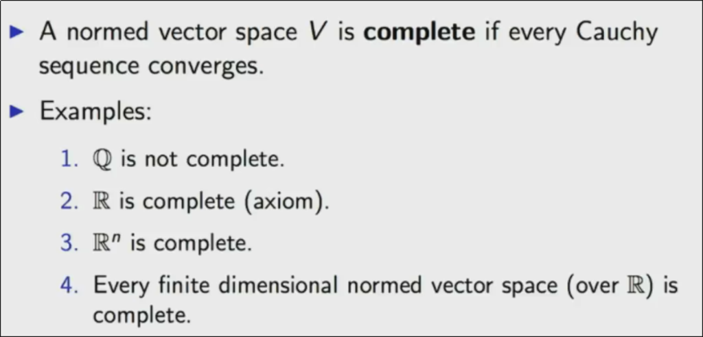

100 Days Of Machine Learning Code
Table of Contents
According to the challenge we are going to explore a project and maybe the possibility to monetize a solution of an industry problem using ML.
"Who’s ready to take the 100 days of ML code challenge? That means coding machine learning for at least an hour everyday for the next 100 days. Pledge with the #100DaysOfMLCode hashtag, I’ll give the first few winners a shoutout!"
1 100DaysOfMLCodeSFMB
After read this tweet can be a great way to master something, do not know what is, yet.
In day 2 I decided to explore the MIT course 9.520/6.860: Statistical Learning Theory and Applications Fall 2017.
2 Day 1 [Thu Jul 5 20:58:13 CDT 2018]
2.1 Siraj Raval Tweet
Who’s ready to take the 100 days of ML code challenge? That means coding machine learning for at least an hour everyday for the next 100 days. Pledge with the #100DaysOfMLCode hashtag, I’ll give the first few winners a shoutout!
2.2 Challenge
Pick an industry that sounds exciting, find a problem they have, think about how AI could be applied to that problem, locate a relevant dataset, apply AI to the dataset, monetize the solution.
2.3 Following my own path using Julia, R and Python
In that order, trying to go as far as I can using the first one syntax.
2.4 Install Julia
_ _ _(_)_ | A fresh approach to technical computing (_) | (_) (_) | Documentation: https://docs.julialang.org _ _ _| |_ __ _ | Type "?help" for help. | | | | | | |/ _` | | | | |_| | | | (_| | | Version 0.6.3 (2018-05-28 20:20 UTC) _/ |\__'_|_|_|\__'_| | Official http://julialang.org/ release |__/ | x86_64-pc-linux-gnu
2.5 Install python
Python version :: sys.version_info(major=3, minor=6, micro=5, releaselevel='final', serial=0) ================= OpenCV version :: 3.4.0 ================= Tensorflow version :: 1.4.1
2.6 Install Emacs
I am joking, Emacs is always installed ;-).
3 Day 2 [Fri Jul 6 19:21:03 CDT 2018]
9.520/6.860: Statistical Learning Theory and Applications, Fall 2017
Instructors: Tomaso Poggio (TP), Lorenzo Rosasco (LR), Georgios Evangelopoulos (GE)
3.1 Course description
The course covers foundations and recent advances of Machine Learning from the point of view of Statistical Learning and Regularization Theory.
Understanding intelligence and how to replicate it in machines is arguably one of the greatest problems in science. Learning, its principles and computational implementations, is at the very core of intelligence. During the last decade, for the first time, we have been able to develop artificial intelligence systems that can solve complex tasks, until recently the exclusive domain of biological organisms, such as computer vision, speech recognition or natural language understanding: cameras recognize faces, smart phones understand voice commands, smart speakers/assistants answer questions and cars can see and avoid obstacles.
The machine learning algorithms that are at the roots of these success stories are trained with labeled examples rather than programmed to solve a task. Among the approaches in modern machine learning, the course focuses on regularization techniques, that provide a theoretical foundation to high-dimensional supervised learning. Besides classic approaches such as Support Vector Machines, the course covers state of the art techniques using sparsity or data geometry (aka manifold learning), a variety of algorithms for supervised learning (batch and online), feature selection, structured prediction, and multitask learning and principles for designing or learning data representations. Concepts from optimization theory useful for machine learning are covered in some detail (first order methods, proximal/splitting techniques,…).
The final part of the course will focus on deep learning networks. It will introduce an emerging theory formalizing three key areas for the rigorous characterization of deep learning: approximation theory – which functions can be represented efficiently?; optimization theory – how easy is it to minimize the training error?; and generalization properties – is classical learning theory sufficient for deep learning? It will also outline a theory of hierarchical architectures that aims to explain how to build machine that learn using cortex principles and similar to how children learn: from few labeled and many more unlabeled data.
The goal of the course is to provide students with the theoretical knowledge and the basic intuitions needed to use and develop effective machine learning solutions to challenging problems.
3.2 Prerequisites
We will make extensive use of basic notions of calculus, linear algebra and probability. The essentials are covered in class and in the math camp material. We will introduce a few concepts in functional/convex analysis and optimization. Note that this is an advanced graduate course and some exposure on introductory Machine Learning concepts or courses is expected. Students are also expected to have basic familiarity with MATLAB/Octave.
3.3 Grading
Pset and project tentative dates: (slides).
3.4 Problem Sets
Problem Set 1 Problem Set 2 Problem Set 3 Problem Set 4
Submission instructions: Follow the instructions included with the problem set. Use the latex template for the report (there is a maximum page limit). Submit your report online through stellar.mit by the due date/time and a printout in the first class after the due date.
3.5 Projects
Reports are 1-page, extended abstracts using NIPS style files.
3.5.1 Projects archive
List of Wikipedia entries, created or edited as part of projects during previous course offerings.
3.6 Syllabus
URL.
Follow the link for each class to find a detailed description, suggested readings, and class slides. Some of the later classes may be subject to reordering or rescheduling.
| Class | Date | Title | Instructor(s) |
|---|---|---|---|
| Class 01 | Wed Sep 06 | The Course at a Glance | TP |
| Class 02 | Mon Sep 11 | The Learning Problem and Regularization | LR |
| Class 03 | Wed Sep 13 | Reproducing Kernel Hilbert Spaces | LR |
| Class 04 | Mon Sep 18 | Positive Definite Functions, Feature Maps and Mercer Theorem | LR |
| Class 05 | Wed Sep 20 | Tikhonov Regularization and the Representer Theorem | LR |
| Class 06 | Mon Sep 25 | Logistic Regression and Support Vector Machines | LR |
| Class 07 | Wed Sep 27 | Regularized Least Squares | LR |
| Class 08 | Mon Oct 02 | Iterative Regularization via Early Stopping | LR |
| Class 09 | Wed Oct 04 | Learning with Stochastic Gradients | LR |
| Class 10 | Wed Oct 11 | Large Scale Kernel Methods | LR |
| Class 11 | Mon Oct 16 | Sparsity Based Regularization | LR |
| Class 12 | Wed Oct 18 | Convex Relaxation and Proximal Gradient | LR |
| Class 13 | Mon Oct 23 | Structured Sparsity Regularization | LR |
| Class 14 | Wed Oct 25 | Multiple Kernel Learning | LR |
| Class 15 | Mon Oct 30 | Learning Theory | LR |
| Class 16 | Wed Nov 01 | Generalization Error and Stability | LR |
| Class 17 | Mon Nov 06 | Online Learning II | Sasha Rakhlin |
| Class 18 | Wed Nov 08 | Online Learning II | Sasha Rakhlin |
| Class 19 | Mon Nov 13 | Data Representation by Design | GE |
| Class 20 | Wed Nov 15 | Learning Data Representation: Dictionary Learning | GE |
| Class 21 | Mon Nov 20 | Learning Data Representation: Neural Networks | GE |
| Class 22 | Wed Nov 22 | Deep Learning Theory: Approximation | TP |
| Class 23 | Mon Nov 27 | Deep Learning Theory: Optimization | TP |
| Class 24 | Wed Nov 29 | Deep Learning Theory: Generalization | TP |
| Class 25 | Mon Dec 04 | Learning Data Representation: Invariance and Selectivity | TP |
| Class 26 | Wed Dec 06 | Deep Networks and Visual Cortex | TP |
| Class 27 | Mon Dec 11 | Poster presentations (2 sessions) |
3.7 Class 1. Course at a Glance
3.7.1 Description
We introduce and motivate the main theme of much of the course, setting the problem of supervised learning from examples as the ill-posed problem of approximating a multivariate function from sparse data. We present an overview of the theoretical part of the course and sketch the connection between classical Regularization Theory with its RKHS-based algorithms and Learning Theory. We briefly describe several different applications ranging from vision to computer graphics, to finance and neuroscience. The last third of the course will be on data representations for learning and deep learning. It will introduce recent theoretical developments towards a) understanding why deep learning works and b) a new phase in machine learning, beyond classical supervised learning: how to learn in an unsupervised way representations that significantly decrease the sample complexity of a supervised learning.
3.7.2 Slides
- Slides for this lecture: PDF.
3.7.2.1 Youtube video class 2015.
3.7.2.2 2017 Course - Center for Brains, Minds and Machines (CBMM)
3.7.3 Relevant Reading
- Mnih et. al. (Deep Mind), Human-level control through deep reinforcement learning, Nature 518, pp. 529-533, 2015.
- Nature Insights, Machine Intelligence (with review article on Deep Learning), Nature, Vol. 521 No. 7553, pp. 435-482, 2015.
4 Day 3 [Sat Jul 7 13:12:57 CDT 2018]
- Class 1 video [14.51]
- Slide [26]
5 Day 4 [Sun Jul 8 12:59:19 CDT 2018]
- Class 1 Done
6 Day 5, 6, 7 [Init Mon Jul 9 16:12:01 CDT 2018]
6.1 Math camp
Math camp extra class, optional for those interested: Tue. 09/12, 4:00 pm - 5:30 pm, Singleton auditorium (46-3002).
6.1.1 Description
We review the basic prerequisites for the course on functional analysis, linear algebra, probability theory and concentration of measure.
6.1.2 Class Reference Material
6.1.2.1 Youtube video
6.1.2.2 Local video
Video file.
6.1.2.3 Slides
Slides: PDF. Original URL. Notes/Book appendix: PDF. Original URL.
6.1.3 Some concept testing with data
We like \(\mathbb{R}^D\) because we can
Addition
v = [1, 2, 3]; w = [4, 5, 6]; println(v + w)
[5, 7, 9]
Multiply by numbers
println(3 * v)
[3, 6, 9]
Scalar product
println(v) println(w) dot(vec(v), vec(w)) dot(v, w)
[1, 2, 3] [4, 5, 6] 32 32
Norm
sqrt(dot(vec(v'), vec(v))) vecnorm(v) norm(v)
3.7416573867739413 3.7416573867739413 3.7416573867739413
Distances between vectors
vecnorm(v - w) norm(v - w)
5.196152422706632 5.196152422706632
RMS value
norm(v) / sqrt(length(v))
2.160246899469287
Standard deviation
Important note: Julia do not use this definition.
norm(v - mean(v))/sqrt(length(v))
0.8164965809277261
Julia's way:
std(v)
1.0
Angle between two vectors
acos(dot(v, w)/(norm(v) * norm(w)))
0.2257261285527342
This what we called "Euclidean" structure. We want to do the samething with \(D = \infty\)
6.1.4 Vector Space
Figure 1: Vector Space
Example: \(\mathbb{R}^D\), space of polynomials, space of functions.
6.1.5 Inner Product
Figure 2: Inner Product
6.1.6 Cauchy-Schwarz inequality
\(\langle v, w \rangle \le \langle v, v \rangle^{\frac{1}{2}} \langle w, w \rangle^{\frac{1}{2}}\).
println(":: v and w inner product ::") dot(v, w) println(":: must be less or equal to ::") sqrt(dot(v, v)) * sqrt(dot(w, w))
:: v and w inner product :: 32 :: must be less or equal to :: 32.83291031876401
6.1.7 Norm
Can define norm from inner product:
\(||v|| = \langle v, v \rangle^{\frac{1}{2}}\)

Figure 3: Norm definition
6.1.8 Metric
Figure 4: Distance
6.1.9 Basis

Figure 5: Basis
6.1.10 Hilbert Space, overview
Goal: to understand Hilbert spaces (complete inner product spaces) and to make sense of the expression
\[f = \sum_{i = 1}^{\infty} \langle f, \phi_i \rangle \phi_i, \ f \in \mathcal{H}\]
Need to talk about
- Cauchy sequence
- Completeness
- Density
- Separability
6.1.11 Cauchy sequence
Figure 6: Cauchy Sequence
See definition and examples in the video:
function nonCauchy(n::Int64) for i = 1:n print((1 + ((-1)^i)), ", ") end end n = 12; nonCauchy(n)
nonCauchy (generic function with 1 method) 0, 2, 0, 2, 0, 2, 0, 2, 0, 2, 0, 2,
6.1.12 Completeness

Figure 7: Completeness
6.1.13 Hilbert Space
Figure 8: Hilbert Space
6.1.14 Orthonormal Basis
- A Hilbert space has a countable orthonormal basis if and only if it is separable.
Can write:
\[f = \sum_{i = 1}^{\infty} \langle f, \phi_i \rangle \phi_i, \ for \ all \ f \in \mathcal{H}\]
Figure 9: Orthonormal Basis
6.2 Functional and Operators (Matrices)
6.2.1 Maps
Figure 10: Maps
6.2.2 Representation of Continuous Functionals
Figure 11: Representation of continuous functionals
6.2.3 Matrix
Figure 12: Matrix
- \(A\) is symmetric if \(A^T = A\)
7 Day 6 (Pending)
7.1 9.520/6.860, Class 02
7.1.1 Description
We formalize the problem of learning from examples in the framework of statistical learning theory and introduce key terms and concepts such as loss functions, empirical and excess risk, generalization error and consistency. We briefly describe foundational results and introduce the concepts of hypothesis space and regularization.
7.1.2 Class Reference Material
L. Rosasco, T. Poggio, Machine Learning: a Regularization Approach, MIT-9.520 Lectures Notes, Manuscript, Dec. 2017.
7.1.3 Chapter 1 - Statistical Learning Theory
Note: The course notes, in the form of the circulated book draft is the reference material for this class. Related and older material can be accessed through previous year offerings of the course.
7.1.4 Further Reading
- F. Cucker and S. Smale, On the mathematical foundations of learning, Bulletin of the American Mathematical Society, 2002.
- T. Evgeniou, M. Pontil and T. Poggio, Regularization networks and support vector machines, Advances in Computational Mathematics, 2000.
- S. Villa, L. Rosasco and T. Poggio, On learnability, complexity and stability, "Empirical Inference, Festschrift in Honor of Vladimir N. Vapnik." Springer-Verlag, Chapter 7, 2013.
- V. Vapnik, An overview of statistical learning theory, IEEE Trans. on Neural Networks , 10(5), 1999.
7.1.5 Video
8 References
println(":: Update! ::")
:: Update! ::